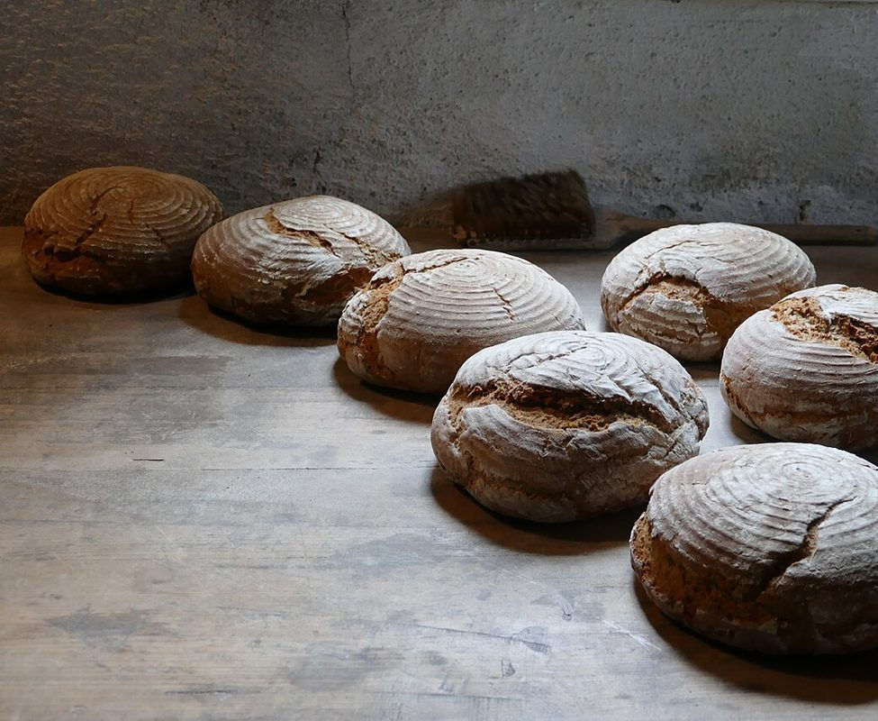

お店について


1お店の台帳
- 店名
- 小さなパン屋 Atty
- 所在地
- 沖縄県浦添市前田666
- 電話
- 070-3803-8080
- @atty.pan
- 営業時間・定休日・スタッフ・席数・駐車場
- 準備中(お問い合わせください)
2店名について
「Atty」の由来はオーナー様に伺い、追記予定です。

サンプル(営業用試作)
掲載写真はフリー素材のイメージで、店舗の実際の写真ではありません。他地域で撮影された写真や、撮影地が不明な写真を含みます。

「Atty」の由来はオーナー様に伺い、追記予定です。